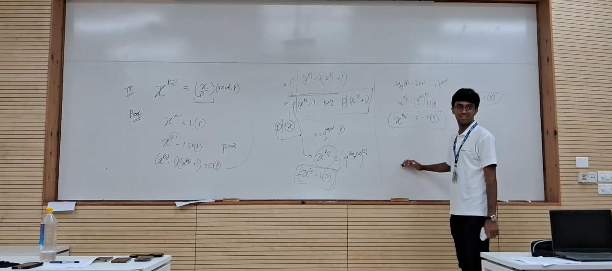

July 10th, 2026
My experience as a paid Research Apprentice at ISI Delhi
 his year, alongside my Teaching Assistant role, I also returned to the Lodha Genius Programme as their Undergraduate Mathematics Research Apprentice, even though I hadn't technically started my undergraduate degree yet.
his year, alongside my Teaching Assistant role, I also returned to the Lodha Genius Programme as their Undergraduate Mathematics Research Apprentice, even though I hadn't technically started my undergraduate degree yet.
The programme made an exception for me to join before having started my undergraduate degree, and I'm grateful they did. It was a paid undergraduate research position, which provided a ₹10,000 research stipend to all undergraduate apprentices, along with accommodation and access to all Ashoka University facilities.
For four weeks, I worked under Professor Shanta Laishram of the Indian Statistical Institute (ISI), New Delhi, exploring advanced number theory and getting a real sense of what advanced mathematics looks like outside usual lectures.
The Lodha Genius Programme is built for gifted high schoolers, so its regular courses run at the undergraduate level. The apprenticeship is built for advanced undergraduates, so its lecture series sometimes runs at the graduate level. Alongside my research, I sat in on:
- "Modern Cryptography" by Professor Sourav Mukhopadhyay, Indian Institute of Technology, Kharagpur
- "Modular Forms: An Introduction to 'Non-Abelian' Symmetry" by Manodeep Raha, Tata Institute of Fundamental Research, Mumbai
- "Statistical Modeling, the Foundation of Generative AI" by Professor Sarvesh Ravichandran Iyer, Ashoka University
Some weeks I was teaching sixteen-year-olds to solve a Rubik's cube. Other weeks I was sitting in an advanced lecture on modular forms. Few programmes let you do both in the same month.
Thank you to Professor Shanta Laishram for taking me on as his apprentice, to Manodeep Raha, Professor Iyer, and Professor Mukhopadhyay for the lectures, and to Ambika Ma'am at Ashoka and to Eshita Ma'am and Satyam Sir at the Lodha Foundation for making all of it possible. Thank you also to Professor Sagar Shrivastava for his guidance throughout the entire programme.

A lecture on Modern Cryptography during the apprenticeship.

At the whiteboard, working through number theory during the apprenticeship.